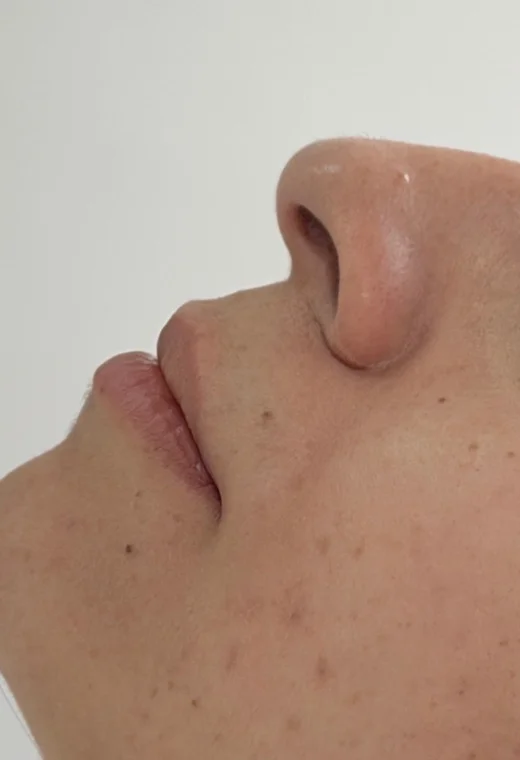
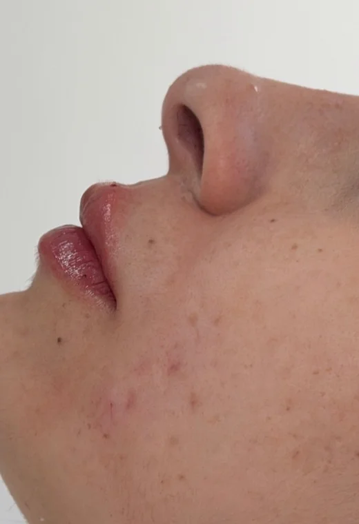
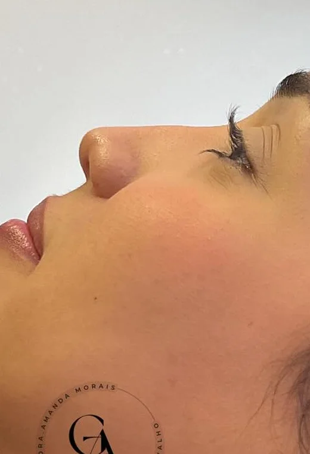
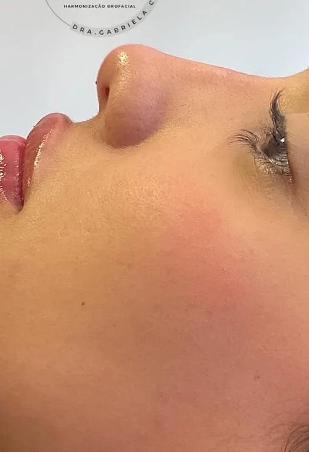
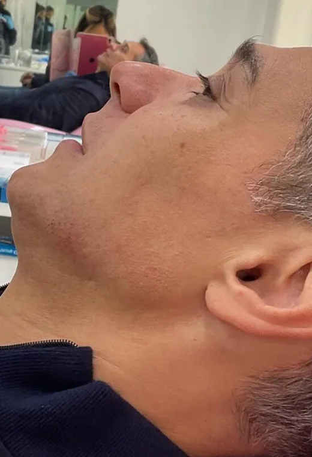
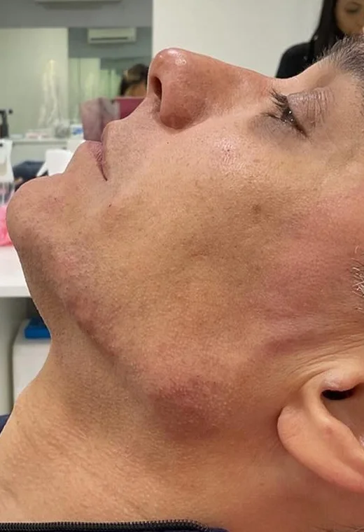

Visão frontal
Mais equilíbrio, simetria e harmonia para o seu rosto.
Harmonização facial
com olhar individual.
G.A CLINIC
Uma conversa sobre estética facial
começa com um olhar atento ao que é seu.
PERFILOPLASTIA
A perfiloplastia observa a relação entre nariz, lábios, mento e as proporções faciais, buscando harmonia por meio de uma avaliação individual e personalizada.
RESULTADOS REAIS
Harmonização orofacial personalizada, com naturalidade e técnica,
respeitando a sua individualidade.
Mais equilíbrio, simetria e harmonia para o seu rosto.


Definição e proporção que destacam a sua beleza natural.


Realce do contorno, leveza e rejuvenescimento.


Mais definição e harmonia para um perfil mais marcante.
Harmonia
que respeita
a sua essência.
CONHEÇA
CIRURGIÃ-DENTISTA
HARMONIZAÇÃO OROFACIAL
Acredito em uma harmonização orofacial que valoriza a individualidade de cada pessoa, unindo técnica, naturalidade e um olhar atento para o que faz sentido no seu rosto.
ROLE PARA CONHECER
CONHEÇA
BIOMÉDICA ESTETA
Acredito na estética como um cuidado completo, que realça o que cada pessoa tem de único, com naturalidade, técnica e respeito à sua essência.
Beleza real
em todas
as suas fases.
ROLE PARA CONTINUAR
PROCEDIMENTOS
Conheça os procedimentos da G.A Clinic.
Uma conversa sobre estética facial começa com um olhar individual.
O primeiro passo é uma conversa sobre o seu caso.
Imagens conceituais de referência. Seleção final a confirmar.
DÚVIDAS FREQUENTES
Um espaço para esclarecer os pontos mais comuns antes da sua avaliação.
06 PERGUNTAS
A Perfiloplastia considera a relação entre nariz, lábios, mento e as proporções faciais, buscando harmonia a partir de um olhar individual.
Conheça a PerfiloplastiaDescrição da proposta; texto institucional a confirmar.
Fale diretamente com a nossa equipe.